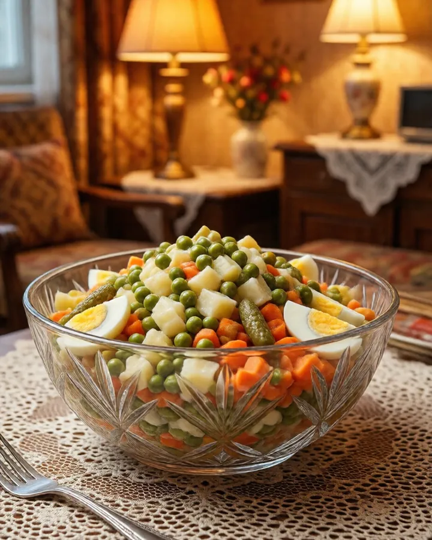
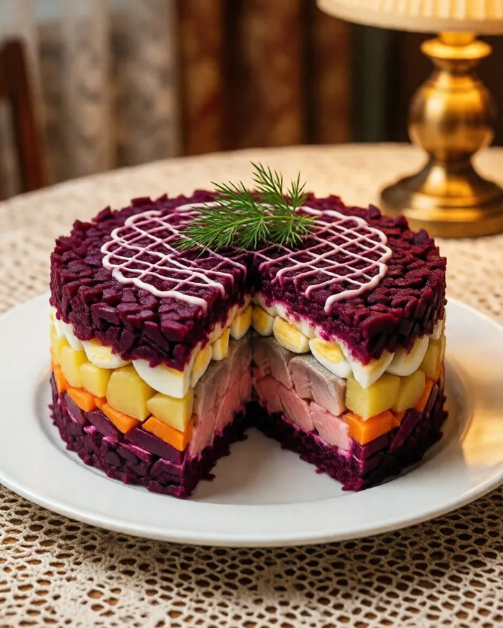
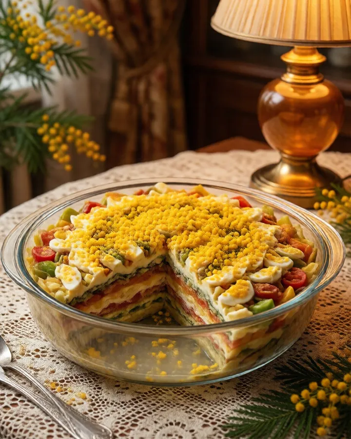
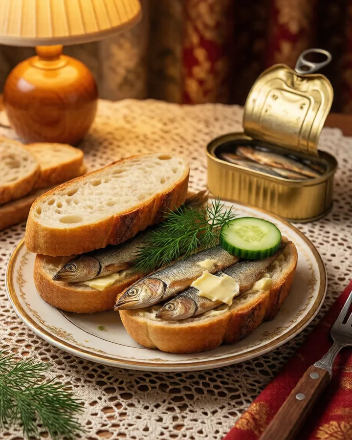
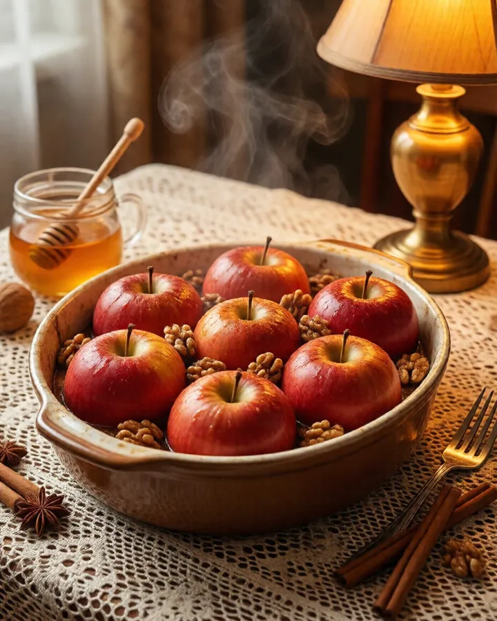

Семь рецептов к новогоднему столу: салаты, закуска, выпечка, десерт и напиток. Граммы, время и что можно приготовить заранее.
Выход указан у каждого рецепта, салаты рассчитаны на 6–8 человек. Овощи для салатов удобно сварить 30 декабря: остывшие режутся ровнее, а салат не «плывёт». Заправлять лучше перед подачей.

40 минут + остывание6–8 порций
Оливье, как у бабушки
Классика с варёной колбасой. Вместо колбасы подойдут отварная курица или говяжий язык.
Нужно
картофель — 4 средних (около 500 г)
морковь — 2 шт.
яйца — 5 шт.
солёные или маринованные огурцы — 4 шт. (около 250 г)
варёная колбаса или отварная курица — 400 г
зелёный горошек — 1 банка
майонез — 200–250 г, соль и перец по вкусу
Как готовить
Картофель и морковь сварите в кожуре до мягкости, 25–30 минут. Остудите полностью.
Яйца варите 10 минут после закипания, затем опустите в холодную воду.
Всё очистите и нарежьте одинаковым кубиком, примерно 7 мм. С горошка слейте жидкость.
Смешайте, а майонез и соль добавьте прямо перед подачей.
Нарезку без майонеза можно хранить в холодильнике под крышкой до суток. Заправленный салат лучше съесть в тот же день и не держать на столе дольше двух часов.

1,5 часа + 6 часов в холодильнике6–8 порций
Селёдка под шубой
Собирать удобно вечером накануне: за ночь слои пропитаются, и салат хорошо режется.
Нужно
филе слабосолёной сельди — 300 г
свёкла — 2 средние
картофель — 3 шт.
морковь — 2 шт.
яйца — 3 шт.
лук — 1 небольшой
майонез — около 200 г
Как готовить
Свёклу сварите в кожуре до мягкости, 1–1,5 часа, или запеките в фольге при 200 °C около часа. Картофель и морковь варите 25–30 минут, яйца 10 минут.
Проверьте филе на косточки и нарежьте кубиком. Лук нарежьте мелко и ошпарьте кипятком, чтобы ушла горечь.
Выкладывайте слоями: сельдь с луком, тёртый картофель, морковь, яйца, свёкла. Каждый слой, кроме сельди, слегка смажьте майонезом.
Накройте и уберите в холодильник минимум на 6 часов.
Овощи натирайте прямо на салат и не приминайте: так шуба получается пышной.

40 минут + 2 часа в холодильнике6 порций
Мимоза
Салат назван по верхнему слою: тёртый желток похож на цветки мимозы.
Нужно
рыбные консервы в собственном соку (сайра или горбуша) — 1 банка, около 240 г
картофель — 3 шт.
морковь — 2 шт.
яйца — 4 шт.
лук — 1 небольшой или пучок зелёного
майонез — около 180 г
Как готовить
Сварите картофель, морковь и яйца, остудите. Белки отделите от желтков.
Рыбу слейте от жидкости и разомните вилкой, косточки уберите.
Лук мелко нарежьте и ошпарьте кипятком. Слои: тёртый картофель, рыба, лук, морковь, тёртые белки. Между слоями немного майонеза.
Сверху натрите желтки на мелкой тёрке и дайте салату постоять 2 часа.

15 минутоколо 20 штук
Бутерброды со шпротами
Та самая банка, которую раньше берегли до праздника.
Нужно
батон — 1 шт.
шпроты — 2 банки по 160 г
чеснок — 1 зубчик
майонез или сливочное масло — 2–3 ст. л.
свежий огурец — 1 шт., немного укропа
Как готовить
Нарежьте батон ломтиками по 1 см и подсушите на сухой сковороде или в духовке при 180 °C, 5 минут.
Ещё тёплые ломтики натрите чесноком и тонко смажьте майонезом или маслом.
Положите кружок огурца, сверху 1–2 рыбки и веточку укропа.
Собирайте за полчаса до гостей, иначе хлеб размокнет.
1,5 часа вместе с охлаждением30–35 штук
Имбирное печенье с детьми
Ребёнку можно доверить почти всё: насыпать муку, раскатать, вырезать формочками и украсить. Плиту и духовку оставьте взрослым.
Нужно
мука — 300 г
сливочное масло — 100 г
сахар, лучше коричневый — 100 г
мёд — 2 ст. л.
яйцо — 1 шт.
молотый имбирь — 2 ч. л., корица — 1 ч. л., сода — ½ ч. л.
для глазури: сахарная пудра — 150 г, лимонный сок — 1–2 ст. л.
Как готовить
Масло, сахар и мёд нагрейте, помешивая, пока сахар не растворится. Не кипятите. Остудите до тёплого, 10–15 минут, чтобы яйцо не свернулось.
Добавьте специи, соду, яйцо, затем муку. Замесите мягкое тесто, заверните в плёнку и уберите в холодильник на 30–60 минут.
Раскатайте толщиной 4–5 мм, вырежьте фигурки и выложите на противень с пергаментом.
Выпекайте при 180 °C 8–10 минут, края должны чуть подрумяниться.
Пудру разотрите с лимонным соком до густой глазури и рисуйте по остывшему печенью.
Сырое тесто не пробуем: в нём сырое яйцо и мука. И помните, что мёд нельзя детям до года.
Если до выпечки проделать трубочкой дырочку, печенье потом можно повесить на ёлку на ленточке.

50 минут4 порции
Печёные яблоки с мёдом и орехами
Десерт, после которого никто не жалуется на тяжесть, а дом пахнет корицей.
Нужно
кисло-сладкие яблоки — 4 шт.
мёд — 2 ст. л.
грецкие орехи — 30 г, горсть изюма
корица — на кончике ножа
сливочное масло — 20 г
Как готовить
Вырежьте у яблок сердцевину, не прорезая донышко.
Смешайте рубленые орехи, изюм, мёд и корицу, наполните яблоки, сверху положите по кусочку масла.
Налейте в форму 2–3 ложки воды и запекайте при 180 °C 30–40 минут, пока яблоки не станут мягкими.
25 минутоколо 1 литра
Глинтвейн без алкоголя
Безалкогольный вариант для всей семьи, и для тех, кто за рулём. Пахнет на всю квартиру.